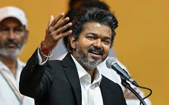

Chandrasekaran Joseph Vijay (born 22 June 1974) is an Indian politician and former Actor who is currently serving as the ninth chief minister of Tamil Nadu since May 2026.
He is the founder and president of the political party Tamilaga Vettri Kazhagam (TVK). Prior to entering politics, he was a leading actor in Tamil cinema and among the highest-paid actors in India, having won numerous accolades including multiple Tamil Nadu State Film Awards and South Indian International Movie Awards.
In February 2024, Vijay announced his retirement from cinema and his formal entry into politics. He launched the TVK, a secular alternative to the established Dravidian parties.
In a watershed moment for Tamil Nadu politics, the TVK secured 108 seats in the 2026 Tamil Nadu Legislative Assembly election, emerging as the single-largest party and breaking the half-century-long electoral duopoly of the DMK and the AIADMK.
[2][3] With the support of several smaller allied parties, Vijay was sworn in as chief minister on 10 May 2026.
Following a stint as a child actor in the 1980s, Vijay made his debut as a leading man